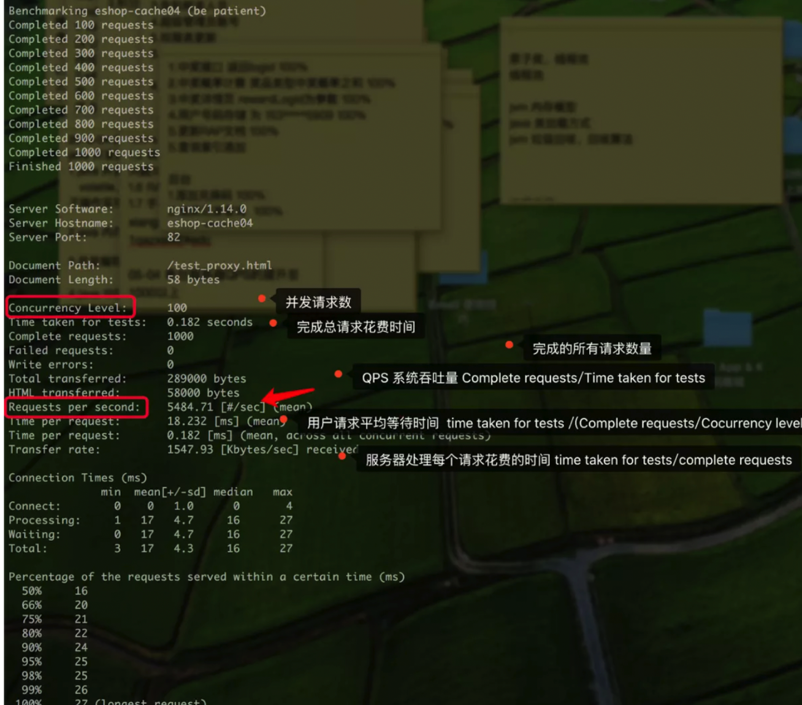

技术¶
python的设计哲学¶
在 python shell 中输入：import this
The Zen of Python, by Tim Peters Python 的设计哲学，作者：Tim Peters Beautiful is better than ugly. 优雅胜于丑陋。 Explicit is better than implicit. 明确胜于含糊。 Simple is better than complex. 简单胜于复杂。 Complex is better than complicated. 复杂胜于繁琐。 Flat is better than nested. 扁平胜于嵌套。 Sparse is better than dense. 间隔胜于紧凑。 Readability counts. 可读性很重要。 Special cases aren't special enough to break the rules. 即使假借特殊之名，也不应打破这些原则。 Although practicality beats purity. 尽管实践大于理论。 Errors should never pass silently. 错误不可置之不理。 Unless explicitly silenced. 除非另有明确要求。 In the face of ambiguity, refuse the temptation to guess. 面对模棱两可，拒绝猜测。 There should be one-- and preferably only one --obvious way to do it. 用一种方法，最好是只有一种方法来做一件事。 Although that way may not be obvious at first unless you're Dutch. 虽然这种方式开始时并不容易，除非你是 Python 之父。 Now is better than never. 但从现在就开始这么做，总比永远都不做好。 Although never is often better than *right* now. 尽管经常有时 “没有做” 反倒比 “现在立马做“ 结果要好。 If the implementation is hard to explain, it's a bad idea. 如果一个实现不容易解释，那么它肯定是个坏主意。 If the implementation is easy to explain, it may be a good idea. 如果一个实现很容易解释，那么它也许是个好主意。 Namespaces are one honking great idea -- let's do more of those! 就像命名空间就是一个绝妙的想法，应当多加利用。
python基本知识¶
pypi上传模块¶
第一步：注册一个账号 https://pypi.python.org/pypi 你想让你的轮子让所有人都能下载，首先得先把轮子共享出去，不然别人访问不到，我们需要注册一个pypi的账号（轮子集中营）
第二步：在你轮子的目录下创建一个setup.py文件，文件内容如下
- ::
from distutils.core import setup
- setup(
name = ‘下载的模块名’, version = ‘1.1.0’, py_modules = [‘你写好的模块名称’], author = ‘wangty’, author_email = ‘xxxxxxxxxx@qq.com’, url = ‘… ‘, description = ‘…’ )
第三步：python setup.py sdist
第四步：python setup.py install
第五步：安装twine pip install twine
第六步：上传模块文件：twine upload dist/* 这个时候你登录的pypi账号就可以看到了
第七步：创建一个空文件，import 你的模块名 （import shengdanshu） 轮子完毕
pylint¶
PyLint 是 Python 源代码分析器，可以分析 Python 代码中的错误，查找不符合代码风格标准和有潜在问题的代码，是一个可以用于验证多个文件的模块和包的工具。 缺省情况下，PyLint 启用许多规则。它具有高度可配置性，从代码内部处理程序控制它。另外，编写插件添加到自己的检查中是可能的。
安装
pip install pylint
pylint –version
pylint 2.0.0
astroid 2.0.1
Python 3.5.2 (default, Nov 23 2017, 16:37:01)
[GCC 5.4.0 20160609]
使用
pylint [options] module_or_package
pylint test.py
************* Module test
test.py:11:0: C0301: Line too long (135/100) (line-too-long)
test.py:25:47: C0326: Exactly one space required after comma
response = requests.request("GET", data_url,headers=headers,params=params)
^ (bad-whitespace)
test.py:36:0: C0301: Line too long (113/100) (line-too-long)
test.py:1:0: C0111: Missing module docstring (missing-docstring)
test.py:10:0: C0103: Constant name "headers" doesn't conform to UPPER_CASE naming style (invalid-name)
...省略部分
test.py:14:18: W0621: Redefining name 'school_name' from outer scope (line 68) (redefined-outer-name)
test.py:32:0: C0111: Missing function docstring (missing-docstring)
test.py:33:4: W0622: Redefining built-in 'id' (redefined-builtin)
test.py:32:12: W0621: Redefining name 'school' from outer scope (line 72) (redefined-outer-name)
------------------------------------------------------------------
Your code has been rated at 3.33/10 (previous run: 3.33/10, +0.00)
发现 Pylint 还会给代码整体打一个分数，我们就可以根据提示一步步调优，提高分数！10 分满分。
如果运行两次 Pylint，它会同时显示出当前和上次的运行结果，从而可以看出代码质量是否得到了改进。
错误代码含义
C：惯例，违反了编码风格标准
R：重构，代码非常糟糕
W：警告，某些 Python 特定的问题
E：错误，很可能是代码中的错误
F：致命错误，阻止 Pylint 进一步运行的错误
for - else¶
for 和 else 也是一对，而且是合法的。
>>> for i in [1,2,3,4]:
print(i)
else:
print(i, '我是else')
1
2
3
4
4 我是else
如果在 for 和 else 之间（循环体内）有if ，也不会影响 for 和 else 的关系。因为 for 的级别比 if 高，else 根本不在乎是否有 if，以及是否执行了满足 if 条件的语句。else 的眼里只有 for，只要 for 顺利执行完毕， else 就会跑一遍：
>>> for i in [1,2,3,4]:
if i > 2:
print(i)
else:
print(i, '我是else')
3
4
4 我是else
那么，如何拆散 for 和 else 呢？只有当 for 循环被 break 语句中断之后，才会跳过 else 语句：
>>> for i in [1,2,3,4]:
if i>2:
print(i)
break
else:
print(i, '我是else')
3
一颗星()和两颗星(*)¶
Python 函数支持默认参数和可变参数，一颗星表示不限数量的单值参数，两颗星表示不限数量的键值对参数。 我们还是举例说明吧： 设计一个函数，返回多个输入数值的和。我们固然可以把这些输入数值做成一个list传给函数，但这个方法，远没有使用一颗星的可变 参数来得优雅：
>>> def multi_sum(*args):
s = 0
for item in args:
s += item
return s
>>> multi_sum(3,4,5)
12
Python 函数允许同时全部或部分使用固定参数、默认参数、单值（一颗星）可变参数、键值对（两颗星）可变参数，使用时必须按照前述顺序书写。
>>> def do_something(name, age, gender='男', *args, **kwds):
print('姓名：%s，年龄：%d，性别：%s'%(name, age, gender))
print(args)
print(kwds)
>>> do_something('xufive', 50, '男', 175, 75, math=99, english=90)
姓名：qqq，年龄：50，性别：男
(175, 75)
{'math': 99, 'english': 90}
三元表达式¶
熟悉 C/C++ 的程序员，初上手 python 时，一定会怀念经典的三元操作符，因为想表达同样的思想，用python 写起来似乎更麻烦。比如：
>>> y = 5
>>> if y < 0:
print('y是一个负数')
else:
print('y是一个非负数')
y是一个非负数
其实，python 是支持三元表达式的，只是稍微怪异了一点，类似于我们山东人讲话。比如，山东人最喜欢用倒装句：打球去吧，要是不下雨的话；下雨，咱就去自习室。翻译成三元表达式就是：
打球去吧 if 不下雨 else 去自习室
来看看三元表达式具体的使用：
>>> y = 5
>>> print('y是一个负数' if y < 0 else 'y是一个非负数')
y是一个非负数
python 的三元表达式也可以用来赋值：
>>> y = 5
>>> x = -1 if y < 0 else 1
>>> x
1
with - as¶
with 语句适合一些事先需要准备，事后需要处理的任务，比如，文件操作，需要先打开文件，操作完成后需要关闭文件。如果不使用with， 文件操作通常得这样：
fp = open(r"D:\Column\temp\mpmap.py", 'r')
try:
contents = fp.readlines()
finally:
fp.close()
如果使用 with - as，那就优雅多了：
>>> with open(r"D:\Column\temp\mpmap.py", 'r') as fp:
contents = fp.readlines()
列表推导式¶
在各种稀奇古怪的语法中，列表推导式的使用频率应该时最高的，对于代码的简化效果也非常明显。比如，求列表各元素的平方，通常应该这样写 （当然也有其他写法，比如使用map函数）：
>>> a = [1, 2, 3, 4, 5]
>>> result = list()
>>> for i in a:
result.append(i*i)
>>> result
[1, 4, 9, 16, 25]
如果使用列表推导式，看起来就舒服多了：
>>> a = [1, 2, 3, 4, 5]
>>> result = [i*i for i in a]
>>> result
[1, 4, 9, 16, 25]
事实上，推导式不仅支持列表，也支持字典、集合、元组等对象。有兴趣的话，可以自行研究。有一篇博文《一行 Python 代码能实现什么丧心病 狂的功能？》，里面的例子，都是列表推导式实现的。
列表索引的各种操作¶
Python 引入负整数作为数组的索引，这绝对是喜大普奔之举。想想看，在C/C++中，想要数组最后一个元素，得先取得数组长度，减一之后做索引， 严重影响了思维的连贯性。Python语言之所以获得成功，我个人觉得，在诸多因素里面，列表操作的便捷性是不容忽视的一点。请看：
>>> a = [0, 1, 2, 3, 4, 5]
>>> a[2:4]
[2, 3]
>>> a[3:]
[3, 4, 5]
>>> a[1:]
[1, 2, 3, 4, 5]
>>> a[:]
[0, 1, 2, 3, 4, 5]
>>> a[::2]
[0, 2, 4]
>>> a[1::2]
[1, 3, 5]
>>> a[-1]
5
>>> a[-2]
4
>>> a[1:-1]
[1, 2, 3, 4]
>>> a[::-1]
[5, 4, 3, 2, 1, 0]
如果说，这些你都很熟悉，也经常用，那么接下来这个用法，你一定会感觉很神奇：
>>> a = [0, 1, 2, 3, 4, 5]
>>> b = ['a', 'b']
>>> a[2:2] = b
>>> a
[0, 1, 'a', 'b', 2, 3, 4, 5]
>>> a[3:6] = b
>>> a
[0, 1, 'a', 'a', 'b', 4, 5]
lambda函数¶
lambda 听起来很高大上，其实就是匿名函数（了解js的同学一定很熟悉匿名函数）。匿名函数的应用场景是什么呢？ 就是仅在定义匿名函数的地方使用这个函数，其他地方用不到。下面是 一个求和的匿名函数，输入参数有两个，x和y，函数体就是x+y，省略了return关键字。
>>> lambda x,y: x+y
<function <lambda> at 0x000001B2DE5BD598>
>>> (lambda x,y: x+y)(3,4) # 因为匿名函数没有名字，使用的时候要用括号把它包起来
匿名函数一般不会单独使用，而是配合其他方法，为其他方法提供内置的算法或判断条件。比如，使用排序函数sorted对多维 数组或者字典排序时，就可以指定排序规则。
>>> a = [{'name':'B', 'age':50}, {'name':'A', 'age':30}, {'name':'C', 'age':40}]
>>> sorted(a, key=lambda x:x['name']) # 按姓名排序
[{'name': 'A', 'age': 30}, {'name': 'B', 'age': 50}, {'name': 'C', 'age': 40}]
>>> sorted(a, key=lambda x:x['age']) # 按年龄排序
[{'name': 'A', 'age': 30}, {'name': 'C', 'age': 40}, {'name': 'B', 'age': 50}]
再举一个数组元素求平方的例子，这次用map函数：
>>> a = [1,2,3]
>>> for item in map(lambda x:x*x, a):
print(item, end=', ')
1, 4, 9,
yield 以及生成器和迭代器¶
py2时代，range()返回的是list， 但如果range(10000000)的话，会消耗大量内存资源，所以，py2又搞了一个xrange()来解决这个问题。py3则只保留了xrange()， 但写作range()。xrange()返回的就是一个迭代器，它可以像list那样被遍历，但又不占用多少内存。generator（生成器）是一种特殊的迭代器， 只能被遍历一次，遍历结束，就自动消失了。总之，不管是迭代器还是生成器，都是为了避免使用list，从而节省内存。那么，如何得到迭代器和 生成器呢？ python置了迭代函数 iter，用于生成迭代器，用法如下：
>>> a = [1,2,3]
>>> a_iter = iter(a)
>>> a_iter
<list_iterator object at 0x000001B2DE434BA8>
>>> for i in a_iter:
print(i, end=', ')
1, 2, 3,
yield 则是用于构造生成器的。比如，我们要写一个函数，返回从0到某正整数的所有整数的平方，传统的代码写法是这样的：
>>> def get_square(n):
result = list()
for i in range(n):
result.append(pow(i,2))
return result
>>> print(get_square(5))
[0, 1, 4, 9, 16]
但是如果计算1亿以内的所有整数的平方，这个函数的内存开销会非常大，这是 yield 就可以大显身手了：
>>> def get_square(n):
for i in range(n):
yield(pow(i,2))
>>> a = get_square(5)
>>> a
<generator object get_square at 0x000001B2DE5CACF0>
>>> for i in a:
print(i, end=', ')
0, 1, 4, 9, 16,
如果再次遍历，则不会有输出了。
装饰器¶
假如我们需要定义很多个函数，在每个函数运行的时候要显示这个函数的运行时长，解决方案有很多。比如， 可以在调用每个函数之前读一下时间戳，每个函数运行结束后再读一下时间戳，求差即可；也可以在每个函数体内的开始和结束位 置上读时间戳，最后求差。不过，这两个方法，都没有使用装饰器那么简单、优雅。下面的例子，很好地展示了这一点。
>>> import time
>>> def timer(func):
def wrapper(*args,**kwds):
t0 = time.time()
func(*args,**kwds)
t1 = time.time()
print('耗时%0.3f'%(t1-t0,))
return wrapper
>>> @timer
def do_something(delay):
print('函数do_something开始')
time.sleep(delay)
print('函数do_something结束')
>>> do_something(3)
函数do_something开始
函数do_something结束
耗时3.077
timer() 是我们定义的装饰器函数，使用@把它附加在任何一个函数（比如do_something）定义之前，就等于把新定义的函数， 当成了装饰器函数的输入参数。运行 do_something() 函数，可以理解为执行了timer(do_something) 。细节虽然复杂，不 过这么理解不会偏差太大，且更易于把握装饰器的制造和使用。
断言assert¶
所谓断言，就是声明表达式的布尔值必须为真的判定，否则将触发 AssertionError 异常。严格来讲，assert是调试手段，不宜 使用在生产环境中，但这不影响我们用断言来实现一些特定功能，比如，输入参数的格式、类型验证等。
>>> def i_want_to_sleep(delay):
assert(isinstance(delay, (int,float))), '函数参数必须为整数或浮点数'
print('开始睡觉')
time.sleep(delay)
print('睡醒了')
>>> i_want_to_sleep(1.1)
开始睡觉
睡醒了
>>> i_want_to_sleep(2)
开始睡觉
睡醒了
>>> i_want_to_sleep('2')
Traceback (most recent call last):
File "<pyshell#247>", line 1, in <module>
i_want_to_sleep('2')
File "<pyshell#244>", line 2, in i_want_to_sleep
assert(isinstance(delay, (int,float))), '函数参数必须为整数或浮点数'
AssertionError: 函数参数必须为整数或浮点数。
算法¶
算法的重要性¶
当你在工作中，大部分时间都是在调用一些api，copy和堆砌一堆需求代码， 你就知道是是你的工作过于简单。编程工作中，思维很重要，锻炼思维的方式之一，就是理解算法。 （有一部分算法解释篇幅过长，可能会引用网上博客资源，如有侵权，请及时联系作者）
机器学习算法¶
监督学习¶
监督学习其实就是我们对输入样本经过模型训练后有明确的预期输出，常见类型可分为”分类问题”和”回归问题”。
分类问题： 想要预测的是离散值。举例：预测肿瘤为良性或者恶性。
回归问题： 预测的是连续值。举例：房价预测。
无监督学习¶
非监督学习就是我们对输入样本经过模型训练后得到什么输出完全没有预期。
聚类算法： 即将训练集中的西瓜分为若干组，每组称为一个“簇”；这些自动形成的簇可能对应一些潜在的概念划分，例如“浅色瓜”“深色瓜”，甚至“本地瓜”“外地瓜”。 举例：谷歌新闻。
单变量线性回归¶
线性回归是监督学习中的重要算法，其主要目的在于用一个函数表示一组数据，其中横轴是变量（假定一个结果只由一个变量影响），纵轴是结果。 线性回归得到的方程，称为假设函数（Hypothesis Function）。当假设函数是线性函数时，其公式为：
代价函数： 又称平方误差函数。代价函数是用于评价线性回归，其公式为：
计算方式是计算每一个点在当前假设函数情况下，偏差的平方和，再取平均数。m即表示一共取了几个点进行判断。 因此可知，假设函数预计的越准确的，其代价函数的结果越接近于0。对于不同的假设函数，其J的结果可以形成一个轮廓图，如下：
上图中，横坐标θ0表示与y轴的交点，纵坐标θ1表示斜率。同一个圆环，表示取值在这些范围内的假设函数， 其代价函数的结果是一样的，即这些取值情况下的精度是一样的。
梯度下降算法¶
梯度下降（Gradientdescent）是获取代价函数最小值的过程。
1、思想
想象现在在一座山（三维立体图形），有多个山峰和山谷（极大值和极小值）。当你在某个位置，找到最快下山的路线（偏导数最小而且是负数的方向）， 并走一小步，然后接着寻找最快下山的路线，直到到达最低点。
2、存在问题
从上述思想可知，对于有多个极小值情况下，用梯度下降算法很有可能到不了最小值点，只会到达某个极小值点，就因为周围没有减小的路线，而停止。 因此，不同的起始值，最终得到的结果会不一样。
3、步骤
如下述公式：（图片来自视频课程）
其中，α就是“一小步”的距离，α取的大小的变化，会导致从一个点抵达的下一个点的位置不一样，会影响到最终抵达的位置。 不断的执行公式，最终会抵达一个结果。要求：每次更新的时候，θ1和θ0都要更新，即将θ0和θ1的结果都算出来后，才更新 θ0和θ1的值，进行下一次的计算。图中的“:=”符号，即赋值符号，对于大多数编程语言来说，就是=号。

多变量线性回归¶
上面我们提到了单变量的线性回归模型，但是我们实际遇到的问题，都会有多个变量影响，比如上篇的例子——房价问题， 在实际情况下影响房价的一定不止房子的面积，房子的地理位置，采光度等等都会或多或少的影响房价，所以必须考虑更 多变量来使我们的预测模型更加精确，这里就教大家多变量的线性回归模型。
我们这次的例题还是用我们上次单变量线性回归模型一样的问题——房价问题，但是我们这次添加了房间数，房子所在楼层 数，房子面积这三个新变量到我们的例题中。
我们把这四个变量命名为x1,x2,x3,x4结果为y，用n表示我们有n个特征，用m表示样本数量。既然我们多了这么多特征变量， 那么我们的模型的公式也要改变：
但为了计算和表示的方便我们多设一个变量x0=1，也就是说我们的θ0 * x0，这样我们可以把特征表示成一个矩阵x = [x0,x1,x2……..,xn]，同时我们的要求的参数θ也能表示成同长度的矩阵θ = [θ0,θ1,θ2…..,θ3]。
这样我们的h(x)就可以表示成h(x) =(θ^T )*x
多元梯度下降¶
多元线性回归的代价函数和单变量的回归的代价函数是一样的，所以我们这里的梯度下降的方法和公式没有太大的差别， 都是原参数减去学习率与原参数在代价函数上的偏导的乘积：
特征缩放¶
虽然多元线性回归的梯度下降方法和单变量回归没有太大的差别，但是多元线性回归涉及到单变量回归没有的问题， 就是多个特征值的取值差别过大，导致模型很难拟合。这里我们需要运用特征缩放的方法对数据进行预处理。特征 缩放其实很简单，比如我们的两个变量房屋的面积和房间数。房屋的面积 的范围在0-2000英寸，而我们的房间数 在1-5间，这两个特征值就相差过大，导致梯度下降的困难。这里我们只需要把我们的房屋面积除以2000，房间数 除以5，这样我们两个特征值的范围就在0-1之间，梯度下降就更加容易。
学习率¶
这里给的是学习率选择的技巧。 首先我们可以绘制出梯度下降迭代的次数和代价函数值的关系图，来判断函数是否收敛，从而判断这个学习率是否合适。
学习率𝜶太小的话，可能导致梯度下降算法收敛缓慢。 学习率𝜶太大的话，可能导致J(𝜽)不会在每次迭代都下降。（相当于每次迈的步数过大，跳过了代价函数最小的点）
我们推荐学习率的改变方式是每十倍取值，比如0.001偏小了我们下次就取0.01，再偏小再取0.1。
特征与多项式回归¶
很多时候我们的数据分布不是直线型的，可能是曲线，也可能是其他图形，这里将教大家如何拟合非直线型函数。 比如这个房屋面积与价格的数据，我们可以看出来像一条抛物线，我们就可以用二次模型去拟合。如果后面继续上升了， 就像一个三次函数，我们就用三次模型去拟合，然后把每一项替换了。

这个问题就转换成了用x1，x2，x3来建立回归。让我们的模型拟合度更高。但是要记住不要忘了特征缩放。毕竟三次和 一次的值会相差很大，增加梯度下降的难度。当然选择什么函数模型去拟合，还是取决于数据在坐标系上的分布像什么函数模型。
正规方程¶
在我们给出例题的时候就想到了我们高中时候学过的最小二成法求回归方程，就会产生疑惑，我们明明可以直接求取各个参数， 为什么还要用梯度下降这种费时费力的方式来求回归方程呢？这里就给出了直接求取参数的正规方程。我们梯度下降的目的是 求出代价函数的取得最小值或者局部最小值的值，在我们高中就学过用导数等于零来求极大值和极小值，这里我们就是用代价 函数导数等于零来求参数的解。我门就是把逐个参数θ求代价函数J的偏导，然后把他们全部置零，并求解。
但这样求解的方式很麻烦，所以这里给出一般解法，首先我们构建x0，x1，x3…..xn的所以特征值的一个矩阵，以及所有目 标值y的矩阵，这里我们给出一个例子：
那么我们的参数的解也是一个矩阵，可以通过这个公式得到：
正规方程法与梯度下降法的比较¶
上面给出的正规方程解法，一步我们就可以得到我们想要的结果，是不是很方便，但是正规方程真的这么万能的话我们也不会 在前面废这么大的劲来讲解梯度下降法。这里我们就给出两种方法的优劣。 首先梯度下降我们要确定学习率，而且需要很多次迭代来训练，费时费力，正规方程则不需要。 但是我们特征过多的话，正规方程求解的时间维度是O（n ^ 3），这就需要比梯度下降更多的时间来求解。梯度下降适用于更 多的情况，而且符合机器学习的方法，所以我们在做机器学习更倾向于用梯度下降而不是用正规方程。
基础概率知识¶
协方差¶
在概率论和统计学中，协方差用于衡量两个变量的总体误差。而方差是协方差的一种特殊情况，即当两个变量是相同的情况。 期望值分别为E(X) = μ 与 E(Y) = ν 的两个实数随机变量X与Y之间的协方差定义为： COV(X，Y)=E[(X-E(X))(Y-E(Y))] 其中，E是期望值。它也可以表示为： 直观上来看，协方差表示的是两个变量总体误差的方差，这与只表示一个变量误差的方差不同。 如果两个变量的变化趋势一致，也就是说如果其中一个大于自身的期望值，另外一个也大于自身的期望值，那么两个变量之间的协方差就是正值。 如果两个变量的变化趋势相反，即其中一个大于自身的期望值，另外一个却小于自身的期望值，那么两个变量之间的协方差就是负值。 如果X与Y是统计独立的，那么二者之间的协方差就是0。 但是，反过来并不成立。即如果X与Y的协方差为0，二者并不一定是统计独立的。 协方差cov(X,Y)的度量单位是X的协方差乘以Y的协方差。而取决于协方差的相关性，是一个衡量线性独立的无量纲的数。 协方差为0的两个随机变量称为是不相关的。
协方差的意思和计算公式
学过概率统计的孩子都知道，统计里最基本的概念就是样本的均值，方差，或者再加个标准差。首先我们给你一个含有n个样本的集合，依次给出这些 概念的公式描述，这些高中学过数学的孩子都应该知道吧，一带而过。
很显然，均值描述的是样本集合的中间点，它告诉我们的信息是很有限的，而标准差给我们描述的则是样本集合的各个样本点到均值的距离之平均。以 这两个集合为例，[0，8，12，20]和[8，9，11，12]，两个集合的均值都是10，但显然两个集合差别是很大的，计算两者的标准差，前者是8.3，后 者是1.8，显然后者较为集中，故其标准差小一些，标准差描述的就是这种“散布度”。之所以除以n-1而不是除以n，是因为这样能使我们以较小的样本 集更好的逼近总体的标准差，即统计上所谓的“无偏估计”。而方差则仅仅是标准差的平方。
为什么需要协方差？
上面几个统计量看似已经描述的差不多了，但我们应该注意到，标准差和方差一般是用来描述一维数据的，但现实生活我们常常遇到含有多维数据的数据 集，最简单的大家上学时免不了要统计多个学科的考试成绩。面对这样的数据集，我们当然可以按照每一维独立的计算其方差，但是通常我们还想了解更 多，比如，一个男孩子的猥琐程度跟他受女孩子欢迎程度是否存在一些联系啊，嘿嘿~协方差就是这样一种用来度量两个随机变量关系的统计量，我们可以 仿照方差的定义：
来度量各个维度偏离其均值的程度，标准差可以这么来定义：
协方差的结果有什么意义呢？如果结果为正值，则说明两者是正相关的(从协方差可以引出“相关系数”的定义)，也就是说一个人越猥琐就越受女孩子欢迎， 嘿嘿，那必须的~结果为负值就说明负相关的，越猥琐女孩子越讨厌，可能吗？如果为0，也是就是统计上说的“相互独立”。 从协方差的定义上我们也可以看出一些显而易见的性质，如：
标准差（均方差）¶
标准差（Standard Deviation） ，也称均方差（mean square error），是各数据偏离平均数的距离的平均数，它是离均差平方和平均后的方根， 用σ表示。标准差是方差的算术平方根。标准差能反映一个数据集的离散程度。平均数相同的，标准差未必相同。 标准差可以反映平均数不能反映出的东西（比如稳定度等）。
方差¶
（variance)是在概率论和统计方差衡量随机变量或一组数据时离散程度的度量。概率论中方差用来度量随机变量和其数学期望（即均值）之间的偏离程度。统 计中的方差（样本方差）是各个数据分别与其平均数之差的平方的和的平均数。在许多实际问题中，研究方差即偏离程度有着重要意义。看这么一段文字可能有 些绕，那就先从公式入手。
对于一组随机变量或者统计数据，其期望值我们由E(X)表示，即随机变量或统计数据的均值，然后对各个数据与均值的差的平方求和，
最后对它们再求期望值就得到了方差公式。
方差与标准差之间的关系
根号里的内容就是我们刚提到的
那么问题来了，既然有了方差来描述变量与均值的偏离程度，那又搞出来个标准差干什么呢？ 发现没有，方差与我们要处理的数据的量纲是不一致的，虽然能很好的描述数据与均值的偏离程度，但是处理结果是不符合我们的直观思维的。 举个例子：一个班级里有60个学生，平均成绩是70分，标准差是9，方差是81，成绩服从正态分布，那么我们通过方差不能直观的确定班级学生 与均值到底偏离了多少分，通过标准差我们就很直观的得到学生成绩分布在[61,79]范围的概率为0.6826，即约等于下图中的34.2%*2
均方差、均方误差又是什么？
标准差（Standard Deviation） ，中文环境中又常称均方差，但不同于均方误差（mean squared error，均方误差是各数据偏离真实值的距离平方和的平均数，也即误差平方和的平均数，计算公式形式上接近方差，它的开方叫均方根误差，均方根误差才和标准差形式上接近），标准差是离均差平方和平均后的方根，用σ表示。标准差是方差的算术平方根。 从上面定义我们可以得到以下几点： 1、均方差就是标准差，标准差就是均方差 2、均方误差不同于均方误差 3、均方误差是各数据偏离真实值的距离平方和的平均数 举个例子：我们要测量房间里的温度，很遗憾我们的温度计精度不高，所以就需要测量5次，得到一组数据[x1,x2,x3,x4,x5],假设温度的真实值是x，数据与真实值的误差e=x-xi 那么均方误差MSE=
总的来说，均方差是数据序列与均值的关系，而均方误差是数据序列与真实值之间的关系，所以我们只需要搞清楚真实值和均值之间的关系就行了。
利用方差减少网络延时误差¶
数据传输过程中，每个包的延时不确定，有抖动，曾经在第一份工作的项目中，遇到一个需求：去除出一批延时数据中，波动最大的值和波动最小的值， 把剩下的延时数值求平均值，以得出单位时间内，延时平均值。
那么此时，就需要用到方差的知识了，详细解决记录如下：
Django¶
Django目录结构¶
HelloWorld: 项目的容器。
manage.py: 一个实用的命令行工具，可让你以各种方式与该 Django 项目进行交互。
HelloWorld/__init__.py: 一个空文件，告诉 Python 该目录是一个 Python 包。
HelloWorld/settings.py: 该 Django 项目的设置/配置。
HelloWorld/urls.py: 该 Django 项目的 URL 声明; 一份由 Django 驱动的网站”目录”。
HelloWorld/wsgi.py: 一个 WSGI 兼容的 Web 服务器的入口，以便运行你的项目。
Django创建启动默认服务器¶
创建项目：django-admin.py startproject 项目名
启动服务器：python manage.py runserver 0.0.0.0:8000
0.0.0.0 让其它电脑可连接到开发服务器，8000 为端口号。如果不说明，那么端口号默认为 8000。 在浏览器输入你服务器的ip及端口号，如果正常启动。
启动Django 400错误
启动django后，不能访问，报400错误。
原因：没有开启允许访问
处理：编辑HelloWorld目录下setting.py ，把其中的 ALLOWED_HOSTS=[]改成ALLOWED_HOSTS=[‘*’]
# 表示任意地址。#
Django模版渲染语言¶
从字典中取值
% for title,time in news.items %}
<div>{{ title }}</div>
<div>{{ time }}</div>
{% endfor %}
Django 源码学习（1）——建立project和app，及runserver¶
通过对django源码的学习，促进对web开发的了解。
这里选择了django stable/1.3.x 分支的源码。
startproject 和 startapp
在django中使用 django-admin.py startproject mysite 来建立project。生成代码：
mysite/
__init__.py
manage.py
settings.py
urls.py
在project中使用 python manage.py startapp polls 来建立app。生成代码：
polls/
__init__.py
models.py
tests.py
views.py
那这两个命令在django中是如何实现的呢？
django-admin.py 和 manage.py 的工作原理
django-admin.py源码：
#!/usr/bin/env python
from django.core import management
if __name__ == "__main__":
management.execute_from_command_line()
manage.py的源码：
#!/usr/bin/env python
from django.core.management import execute_manager
import imp
try:
imp.find_module('settings') # Assumed to be in the same directory.
except ImportError:
import sys
sys.stderr.write("Error: Can't find the file 'settings.py' in the "
"directory containing %r. It appears you've "
"customized things.\nYou'll have to run django-admin.py, "
"passing it your settings module.\n" % __file__)
sys.exit(1)
import settings
if __name__ == "__main__":
execute_manager(settings)
他们都使用了django.core.management模块，查看该模块的代码：
def execute_from_command_line(argv=None):
utility = ManagementUtility(argv)
utility.execute()
def execute_manager(settings_mod, argv=None):
setup_environ(settings_mod) # <-- 唯一的区别在此
utility = ManagementUtility(argv)
utility.execute()
发现manage.py只是比django-manage.py多了setup_environ(settings_mod)一行而已。
继续查看setup_environ的源码：
# Set DJANGO_SETTINGS_MODULE appropriately.
if original_settings_path:
os.environ['DJANGO_SETTINGS_MODULE'] = original_settings_path
else:
os.environ['DJANGO_SETTINGS_MODULE'] = '%s.%s' % (project_name, settings_name)
# Import the project module. We add the parent directory to PYTHONPATH to
# avoid some of the path errors new users can have.
sys.path.append(os.path.join(project_directory, os.pardir))
project_module = import_module(project_name)
sys.path.pop()
发现manage.py多做了2件事情
·设置环境变量DJANGO_SETTINGS_MODULE为当前project的settings文件。
>>> import os; os.environ['DJANGO_SETTINGS_MODULE']
'mysite.settings'
·将当前project的父目录放入PYTHONPATH，然后以模块的方式导入project，最后把父目录从PYTHONPATH中去掉。
>>> import sys; sys.modules['mysite']
<module 'mysite' from '/home/yijingping/repos/mysite/../mysite/__init__.pyc'>
所以实际上manage.py 等于
django-admin.py --settings=mysite.settings --pythonpath=/home/yijingping/repos/mysite/../
__import__("mysite")
manage.py 执行过程
通过execute_manager()与execute_from_command_line()方法，可以看到Django命令主要通过 django.core.management.ManagementUtility类的入口execute()执行。
命令执行过程如下：
1.解析命令，获得要执行的子命令名称（如startapp）。通过继承自OptionParser的类LaxOptionParser解析命令行.
subcommand = self.argv[1]
2.找出subcommand的完整路径
self.fetch_command(subcommand)
其中fetch_command调用get_commands从下面几个地方找命令。
1.django/core/management/commands目录下的命令文件
2.project/<INSTALLED_APPS>/management/commands/目录下的命令文件
如果project存在，则会把startproject从命令中去掉。所以manage.py比django-admin.py少这个命令。
3.根据返回的subcommand实例，执行run_from_argv()方法：
self.fetch_command(subcommand).run_from_argv(self.argv)
从django.core.management.base.BaseCommand中可知run_from_argv()方法的调用过程：
run_from_argv() -> execute() -> handle()
所以我们自定义command的时候要继承BaseCommand，并实现handle()方法：
class Command(BaseCommand):
def handle(self, *args, **options):
pass
handle()方法执行的结果就是最后的返回。
Command命令
在django/core/management/commands可以发现所有的系统命令。
yijingping@yjp-pc:~/repos/django/django/core/management/commands$ ls
cleanup.py diffsettings.py inspectdb.py runfcgi.py sqlclear.py sqlinitialdata.py startapp.py testserver.py
compilemessages.py dumpdata.py loaddata.py runserver.py sqlcustom.py sql.py startproject.py validate.py
createcachetable.py flush.py makemessages.py shell.py sqlflush.py sqlreset.py syncdb.py
dbshell.py __init__.py reset.py sqlall.py sqlindexes.py sqlsequencereset.py test.py
我选择最常用的三个进行分析。
startproject.py
从django/conf/project_template拷贝工程代码到目录project_name下
class Command(LabelCommand):
def handle_label(self, project_name, **options):
directory = os.getcwd()
# 判断当前的project_name是否已经存在
try:
import_module(project_name)
except ImportError:
pass
else:
raise CommandError("%r conflicts with the name of an existing Python module and cannot be used as a project name. Please try another name." % project_name)
# 从`django/conf/project_template`拷贝工程代码到目录project_name下
copy_helper(self.style, 'project', project_name, directory)
# 生成settings.py文件
# Create a random SECRET_KEY hash, and put it in the main settings.
main_settings_file = os.path.join(directory, project_name, 'settings.py')
settings_contents = open(main_settings_file, 'r').read()
fp = open(main_settings_file, 'w')
secret_key = ''.join([choice('abcdefghijklmnopqrstuvwxyz0123456789!@#$%^&*(-_=+)') for i in range(50)])
settings_contents = re.sub(r"(?<=SECRET_KEY = ')'", secret_key + "'", settings_contents)
fp.write(settings_contents)
fp.close()，
通过查看django.core.management.base.copy_helper方法，可以发现，这个方法既可以copy project，也可以copy app。 并且在拷贝的过程中会将 urls.py和settings.py中的{{project_name}}变量替换成传入的project参数。
startapp.py
startapp.py 与 startproject.py 类似，只是拷贝的源目录换成django/conf/app_template而已。
copy_helper(self.style, 'app', app_name, directory, project_name)
runserver.py
在开发过程中，最常用的就是python manage.py runserver。它的执行过程到底是什么样的呢？
在runserver.py中的执行过程：
handle() -> run() -> inner_run() -> django.core.servers.basehttp.run()
在django/core/servers/basehttp.py中我们看到run()方法的定义：
def run(addr, port, wsgi_handler, ipv6=False):
server_address = (addr, port)
httpd = WSGIServer(server_address, WSGIRequestHandler, ipv6=ipv6)
httpd.set_app(wsgi_handler)
httpd.serve_forever()
这其实是一个wsgi程序。其中的参数wsgi_handler是在runserver.py中传入的。
from django.core.handlers.wsgi import WSGIHandler
def get_handler(self, *args, **options):
return WSGIHandler()
在django/core/handlers/wsgi.py找到WSGIHandler的定义：
class WSGIHandler(base.BaseHandler):
initLock = Lock()
request_class = WSGIRequest
def __call__(self, environ, start_response):
from django.conf import settings
# 载入middleware
# Set up middleware if needed. We couldn't do this earlier, because
# settings weren't available.
if self._request_middleware is None:
self.initLock.acquire()
try:
try:
# Check that middleware is still uninitialised.
if self._request_middleware is None:
self.load_middleware()
except:
# Unload whatever middleware we got
self._request_middleware = None
raise
finally:
self.initLock.release()
# 处理request
set_script_prefix(base.get_script_name(environ))
signals.request_started.send(sender=self.__class__)
try:
try:
request = self.request_class(environ)
except UnicodeDecodeError:
logger.warning('Bad Request (UnicodeDecodeError)',
exc_info=sys.exc_info(),
extra={
'status_code': 400,
}
)
response = http.HttpResponseBadRequest()
else:
response = self.get_response(request)
finally:
signals.request_finished.send(sender=self.__class__)
# 返回response
try:
status_text = STATUS_CODE_TEXT[response.status_code]
except KeyError:
status_text = 'UNKNOWN STATUS CODE'
status = '%s %s' % (response.status_code, status_text)
response_headers = [(str(k), str(v)) for k, v in response.items()]
for c in response.cookies.values():
response_headers.append(('Set-Cookie', str(c.output(header=''))))
start_response(status, response_headers)
return response
Django 源码学习（2）——url路由¶
url路由
url路由将url地址与views的处理方法对应起来。因此urls.py的配置是django中很重要的一块。 这一篇专门来分析django是如何做url路由的。
入口
在<projetc>/settings.py中有一行配置（我当前的project_name叫mysite）：
ROOT_URLCONF = 'mysite.urls'
所以django url的总入口由settings的变量ROOT_URLCONF指定。
配置
要弄清楚django如何处理url配置，先要弄清楚几个概念
URL模式（URL Pattern）
URL模式是指在Django urls模块中，名为urlpatterns的元组中包含的每一个值。通常由patterns方法生成urlpatterns元组的内容。
每个URL模式都需要指定如下几个内容：
·一个正则表达式字符串。
·一个可调用对象，通常为一个视图函数或一个指定视图函数路径的字符串。
·可选的要传递给视图函数的默认参数（字典形式）。
·一个可选的name参数。
·路径前缀，加在视图函数路径字符串的前面组成完整的视图函数路径。可以通过patterns方法的第一个参数指定.
如果有include，则递归生成上面的模式。
类django.core.urlresolvers.RegexURLPattern用来表示Django URL模式.
class RegexURLPattern(object):
# 添加前缀
def add_prefix(self, prefix):
pass
# 解析，并返回ResolveMatch
def resolve(self, path):
match = self.regex.search(path)
if match:
return ResolverMatch(self.callback, args, kwargs, self.name)
# 根据第二个参数获取views的方法引用
def _get_callback(self):
return self._callback
callback = property(_get_callback)
URL分解器（URL Resolve）
一个URL Resolve可以包含多个URL Pattern，也可以包含多个其他URL Resolve。 通过这种包含结构设计，实现Django对URL的层级解析。
URL分解器是Django实现app与项目解耦的关键。通常由include方法操作的URL配置模块，最终会被解释成为URL分解器。
每个URL分解器都需要指定如下几个内容:
·一个正则表达式字符串。URL开始部分是否匹配正则表达式，如匹配，去除成功匹配部分后余下部分匹配包含的URL模式和URL分解器。
·URL配置模块名或URL配置模块的引用。
·可选的关键参数(字典形式)。
·可选的App名称.
·可选的名称空间名字.
类django.core.urlresolvers.RegexURLResolver用来表示URL分解器.
class RegexURLResolver(object):
def __init__(self, regex, urlconf_name, default_kwargs=None, app_name=None, namespace=None):
pass
# Deep search 生成匹配模式，只调用一次
def _populate(self):
lookups = MultiValueDict()
namespaces = {}
apps = {}
for pattern in reversed(self.url_patterns):
pass
self._reverse_dict = lookups
self._namespace_dict = namespaces
self._app_dict = apps
# 顺序搜索模式，搜索到则返回ResolverMatch
def resolve(self, path):
tried = []
match = self.regex.search(path)
if match:
new_path = path[match.end():]
for pattern in self.url_patterns:
return ResolverMatch(sub_match.func, sub_match.args, sub_match_dict, sub_match.url_name,
self.app_name or sub_match.app_name, [self.namespace] + sub_match.namespaces)
匹配结果（Resolver Match）
匹配结果是指当URL被正确匹配时，需返回的匹配结果.
匹配结果需指定以下几个内容:
·一个可调用对象。通常是视图函数 ·视图函数参数。通常是URL模式中正则表达式命名组匹配的值 ·视图函数关键字参数。通常是url方法中设置传递给视图函数的参数(字典形式) ·可选的URL名称参数。 ·可选的APP名称参数。 ·可选的命名空间参数。
类django.core.urlresolvers.ResolverMatch用来表示匹配结果。ResolverMatch类实现了__getitem__方法，可以同元组操作一样, 获取视图函数引用与视图函数参数，从而具备调用视图函数的条件。
class ResolverMatch(object):
def __init__(self, func, args, kwargs, url_name=None, app_name=None, namespaces=None):
self.func = func
self.args = args
self.kwargs = kwargs
self.app_name = app_name
...
# 在handler中使用该方法获取views方法的引用和参数
def __getitem__(self, index):
return (self.func, self.args, self.kwargs)[index]
URL配置处理过程
类django.core.handlers.base.BaseHandler中get_response()方法对url做了处理。 其中第1、3步是url处理的重点。
def get_response(self, request):
"Returns an HttpResponse object for the given HttpRequest"
from django.core import exceptions, urlresolvers
from django.conf import settings
try:
# 1. 用默认urlconf设置urlresolver
urlconf = settings.ROOT_URLCONF
urlresolvers.set_urlconf(urlconf)
resolver = urlresolvers.RegexURLResolver(r'^/', urlconf)
try:
response = None
# 2. 处理request middleware
for middleware_method in self._request_middleware:
response = middleware_method(request)
if response:
break
if response is None:
if hasattr(request, "urlconf"):
# 3. 用自定义urlconf重置urlresolver
urlconf = request.urlconf
urlresolvers.set_urlconf(urlconf)
resolver = urlresolvers.RegexURLResolver(r'^/', urlconf)
# 4. 获取ResolveMatch的值
callback, callback_args, callback_kwargs = resolver.resolve(request.path_info)
# 5. 处理 view middleware
for middleware_method in self._view_middleware:
response = middleware_method(request, callback, callback_args, callback_kwargs)
if response:
break
if response is None:
try:
# 6. 调用views中的方法
response = callback(request, *callback_args, **callback_kwargs)
except Exception, e:
# 7. 处理exception middleware
for middleware_method in self._exception_middleware:
response = middleware_method(request, e)
if response:
break
if response is None:
raise
# Complain if the view returned None (a common error).
if response is None:
# 错误处理
# 处理 template response middleware
if hasattr(response, 'render') and callable(response.render):
for middleware_method in self._template_response_middleware:
response = middleware_method(request, response)
response = response.render()
except:
# 错误处理
finally:
urlresolvers.set_urlconf(None)
try:
# 处理 response middleware
for middleware_method in self._response_middleware:
response = middleware_method(request, response)
response = self.apply_response_fixes(request, response)
except:
# 错误处理
return response
Django 源码学习（3）——中间件¶
在上一篇分析url配置处理过程的时候，看到调用views方法之前、之后都有很多对中间件（middleware）的操作。 这一篇则专门分析django中对 middleware的处理。
中间件（middleware）
Django的中间类型分为五种，特定的类型的中间件必须具有指定的方法：
·请求中间件（Request Middleware）
process_request方法
·视图中间件（View Middleware）
process_view
·模板中间件（Template Response Middleware）
process_template_response
·响应中间件（Response Middleware）
process_response
·异常中间件（Exception Middleware）
process_exception
可以存在一个类同时具有多个以上方法，即一个类可以同时是多种中间件。
中间件类必须使用无参__init__函数，创建类实例时，不需要任何参数。
中间件加载顺序
类django.core.handlers.base.BaseHandler中load_middleware()方法加载中间件
class BaseHandler(object):
def load_middleware(self):
# 从settings.MIDDLEWARE_CLASSES中获取中间件配置
for middleware_path in settings.MIDDLEWARE_CLASSES:
if hasattr(mw_instance, 'process_request'):
request_middleware.append(mw_instance.process_request)
if hasattr(mw_instance, 'process_view'):
self._view_middleware.append(mw_instance.process_view)
## 注意下面3个和上面2个顺序不同，前者是FIFO，后者是FILO
if hasattr(mw_instance, 'process_template_response'):
self._template_response_middleware.insert(0, mw_instance.process_template_response)
if hasattr(mw_instance, 'process_response'):
self._response_middleware.insert(0, mw_instance.process_response)
if hasattr(mw_instance, 'process_exception'):
self._exception_middleware.insert(0, mw_instance.process_exception)
def get_response(self, request):
pass
从上面可以看出，middlare在配置中出现的顺序，跟他的处理顺序是相关的。 控制传入动作的中间件执行顺序是从上到下，控制返回动作的中间件执行顺序 是从下到上。 即请求中间与视图中间件的执行顺序是从上到下，模板中间件、异常中间件与响应中间件的执行顺序是从下到上.
如配置是：
MIDDLEWARE_CLASSES = (
'django.contrib.sessions.middleware.SessionMiddleware',
'django.middleware.common.CommonMiddleware',
'django.middleware.csrf.CsrfViewMiddleware',
'django.contrib.auth.middleware.AuthenticationMiddleware',
'django.contrib.messages.middleware.MessageMiddleware',
'django.middleware.clickjacking.XFrameOptionsMiddleware',
)
则处理过程如下图所示：
中间建处理过程
类django.core.handlers.base.BaseHandler中get_response()方法使用中间件处理访问。
在前一篇已经分析过了，这里不重复分析，只贴结论：
1.应用请求中间件，处理传入请求。如果请求中间件方法process_request返回的response非空，则终止处理过程，执行步骤7。
2.url匹配，查找视图函数。
3.应用视图中间件，处理传入请求视图与视图参数。如果视图中间件方法process_view返回的response非空，则终止处理过程，执行步骤7。
4.调用视图函数。
5.如果视图函数抛出异常 ，应用异常中间件，处理传入请求与异常。如果异常中间件方法process_exception回的response非空，则终止处理过程。无论是否终止过程，都会跳到步骤7。
6.如果response支持延迟渲染，应用模板中间件。执行步骤7。
7.应用响应中间件，处理传入请求与中间件返回的response。
过程图如下：
过程中的图有2点错误:
·exception middleware应该在view视图函数的右边。
·在response middleware的前面有一层 template response middleware。
Django 源码学习（4）—— Views模块¶
Views模块
Views模块并不是Django中必须的，但是它的存在简化了Django的开发。
因为类django.core.handlers.base.BaseHandler中get_response()方法会回调views中的方法，并要求返回HttpResponse。 所以只要符合下面格 式的方法，都能作为views方法：
from django.http import HttpResponse
def view_func(request, *args, **kwargs):
return HttpResponse("html content")
代码组织：
django/views/
├── csrf.py
├── debug.py
├── decorators
│ ├── cache.py
│ ├── csrf.py
│ ├── gzip.py
│ ├── http.py
│ ├── __init__.py
│ └── vary.py
├── defaults.py
├── generic
│ ├── base.py
│ ├── create_update.py
│ ├── date_based.py
│ ├── dates.py
│ ├── detail.py
│ ├── edit.py
│ ├── __init__.py
│ ├── list_detail.py
│ ├── list.py
│ └── simple.py
├── i18n.py
├── __init__.py
└── static.py
view decorators
decorators中封装的函数和装饰器，可以非常方便的使用于reponse的压缩、安全、缓存设置。
gzip.py
我在开发api的时候，就经常用gzip，只要简单的一行，就可以返回gzip压缩后的response（如果在settings.middleware中设置了 django.middleware.gzip.GZipMiddleware，则会自动压缩）：
from django.views.decorators.gzip import gzip_page
@gzip_page
def view_func(request):
res = {...}
return HttpResponse(simplejson.dumps(res), mimetype="application/json; charset=utf-8")
方法django.views.decorators.gzip.gzip_page其实很简单，它直接用django.middleware.gzip.GZipMiddleware包装了当前的view方法。
from django.utils.decorators import decorator_from_middleware
from django.middleware.gzip import GZipMiddleware
gzip_page = decorator_from_middleware(GZipMiddleware)
gzip_page.__doc__ = "Decorator for views that gzips pages if the client supports it."
类django.middleware.gzip.GZipMiddleware则处理了view返回的response，进行了gzip压缩，并设置相应的header。
re_accepts_gzip = re.compile(r'\bgzip\b')
class GZipMiddleware(object):
# 处理views_func返回的response
def process_response(self, request, response):
# 判断是否已经压缩过
# 判断是否Accept-Encoding是否有gzip
# 对IE做特殊处理
# ....
# 压缩content, 设置header信息
response.content = compress_string(response.content)
response['Content-Encoding'] = 'gzip'
response['Content-Length'] = str(len(response.content))
return response
csrf.py
Django CSRF与Gzip一样，最终也是调用middleware。
源代码中的原理是：
·第一次请求返回reponse的时候生成csrf写入cookie。（默认的key为’csrftoken’，也可以通过settings.CSRF_COOKIE_NAME来指定） ·第一次请求render template的时候在POST表单中，写入<input type=”hidden” name=”csrfmiddlewaretoken” value=”$csrf_token”/> ·提交的时候检查$request.COOKIES[‘csrftoken’] == $request.POST[‘csrfmiddlewaretoken’]，如果相等则通过，不相等则forbiden。
cache.py
通过get_cache()获取settings中配置的cache，中间件django.middleware.cache.CacheMiddleware 在process_request()中获取cache， 在process_response()中写入cache。
http.py
包含了 处理Etag和Last-Modified头，限制HTTP Method的装饰器。
generic view
django自动生成增、删、改、查、列表页面的视图类。它将web的基本操作进行了基本的封装，虽然灵活性降低了，但是用户写的代码更少了。
generic view中包含3中类型：
·View: 视图类，控制增删改查逻辑 ·TemplateResponseMixin: 模板类，控制渲染模板 ·ObjectMixin: 控制要传入的数据
basic views 的继承关系图：
启动Django 400错误可能的原因¶
启动django后，不能访问，报400错误。
原因：没有开启允许访问
处理：编辑HelloWorld目录下setting.py ，把其中的 ALLOWED_HOSTS=[]改成ALLOWED_HOSTS=[‘*’] ##* 表示任意地址。
模版渲染语言，从字典中取值¶
% for title,time in news.items %}
<div>{{ title }}</div>
<div>{{ time }}</div>
{% endfor %}
Flask¶
Flask Demo¶
1.安装flask模块
pip install flask
2.从flask模块导入Flask类
from flask import Flask
3.创建Flask类实例
app = Flask(__name__)
__name__是应用模块或者包的名称，代表flask程序从__name__ == ‘__main__’处启动
4.创建路由
@app.route(‘/’) 使用 route() 装饰器告诉 Flask 什么样的URL 能触发我们的函数
5.启动项目
app.run() 我们用 run() 函数来让应用运行在本地服务器上
6.hello world小例子
from flask import Flask
app = Flask(__name__)
@app.route('/')
def hello_world():
return 'Hello World!'
if __name__ == '__main__':
app.run()
Flask 框架知识点¶
1.路由¶
@app.route('/projects/')
def projects():
return "hello"
3.构造 URL¶
可以用 url_for() 来给指定的函数构造 URL。它接受函数名作为第一个参数， 也接受对应 URL 规则的变量部分的命名参数。未知变量部分会添加到 URL 末 尾作为查询参数。
from flask import Flask, url_for
app = Flask(__name__)
@app.route('/')
def index():
pass
@app.route('/login')
def login():
pass
@app.route('/user/<username>')
def profile(username):
pass
with app.test_request_context():
print url_for('index')
print url_for('login')
print url_for('login', next='/')
print url_for('profile', username='John Doe')
结果：
/
/login
/login?next=/
/user/John%20Doe
4.HTTP 方法¶
HTTP （与 Web 应用会话的协议）有许多不同的访问 URL 方法。默认情况下， 路由只回应 GET 请求，但是通过 route() 装饰器传递 methods 参数可以改变 这个行为。
@app.route('/login', methods=['GET', 'POST'])
def login():
if request.method == 'POST':
do_the_login()
else:
show_the_login_form()
5.静态文件¶
在你的包中或是模块的所在目录中创建一个名为 static 的文件夹，在应用中 使用 /static 即可访问。
url_for(‘static’, filename=’style.css’)这个文件应该存储在文件系统上的 static/style.css
6.模板渲染¶
1.使用 render_template() 方法来渲染模板。你需要做的一切就是将模板名和 你想作为关键字的参数传入模板的变量。
2.{{}} 来表示变量名，这种 {{}} 语法叫做变量代码块
3.用 {%%} 定义的控制代码块，可以实现一些语言层次的功能，比如循环或者if 语句
4.使用 {# #} 进行注释，注释的内容不会在html中被渲染出来
python中的代码
from flask import render_template
@app.route('/hello/')
@app.route('/hello/<name>')
def hello(name=None):
return render_template('hello.html', name=name)
@app.route('/myindexs/<indexs>')
def myindexs(indexs=None):
return render_template('hello.html', indexs=indexs)
HTML中的代码
<h1>{{ name }}</h1>
{% if name %}
there's name attr
{% else %}
there's not name attr
<ul>
{% for index in indexs %}
<li> {{ index }} </li>
{% endfor %}
</ul>
{# {{ name }} #}
{% endif %}
7.访问请求数据¶
通过 args 属性来访问 URL 中提交的参数
searchword = request.args[“data”]
通过files.get属性获取上传的文件
request.files.get('img')
8.获取表单数据¶
通过:attr:~flask.request.form 属性来访问表单数据（ POST 或 PUT 请求提交 的数据）。
@app.route('/login', methods=['POST', 'GET'])
def login():
error = None
if request.method == 'POST':
if valid_login(request.form['username'],request.form['password']):
return log_the_user_in(request.form['username'])
else:
error = 'Invalid username/password
return render_template('login.html', error=error)
如果name属性有多个值，可以使用request.form.getlist(‘name’)，该方法将返回一个列表
request.form.getlist('name')
9.会话¶
session 对象。它允许你在不同请求间存储特定用户的信息。
from flask import Flask, session, redirect, url_for, escape, request
app = Flask(__name__)
@app.route('/')
def index():
if 'username' in session:
return 'Logged in as %s' % escape(session['username'])
return 'You are not logged in'
@app.route('/login', methods=['GET', 'POST'])
def login():
if request.method == 'POST':
session['username'] = request.form['username']
return redirect(url_for('index'))
return '''
<form action="" method="post">
<p><input type=text name=username>
<p><input type=submit value=Login>
</form>
'''
@app.route('/logout')
def logout():
# remove the username from the session if it's there
session.pop('username', None)
return redirect(url_for('index'))
获取session信息
session.get("is_login")
10.蓝图划分¶
能够把你的应用依据许多能完成单一任务的小应用组织起来
1.蓝图主界面
from flask import Flask
from user_app import user_app
app = Flask(__name__)
app.register_blueprint(user_app)
2.蓝图分界面
from flask import Blueprint, render_template
user_app = Blueprint('user_app', __name__)
@user_app.route('/user/login')
def timeline(user_url_slug):
# 做些处理
return render_template('/user/login.html')
Flask设置返回json格式数据¶
使用标准库json
比较常见的是采用标准库json进行格式转换：
from flask import Flask
import json
app = Flask(__name__)
@app.route('/')
def root():
t = {
'a': 1,
'b': 2,
'c': [3, 4, 5]
}
return json.dumps(t)
if __name__ == '__main__':
app.debug = True
app.run()
这样当访问时即能够正常得到json数据。但这么做有一个缺点，就是HTTP返回的Content-Type仍然是text/html，即HTTP认为内容是HTML。
声明Content-Type为json格式
在上面的解决方法上作一个加强，手动指定其Content-Type为application/json，通常采用的是修改Flask中的Response模块：
from flask import Flask, Response
import json
app = Flask(__name__)
@app.route('/')
def root():
t = {
'a': 1,
'b': 2,
'c': [3, 4, 5]
}
return Response(json.dumps(t), mimetype='application/json')
if __name__ == '__main__':
app.debug = True
app.run()
这样不仅HTTP返回的内容是json，而且返回的Content-Type也是application/json了。
使用Flask的jsonify模块
实际上flask已经为json准备了专门的模块：jsonify。jsonify不仅会将内容转换为json，而且也会修改Content-Type为application/json。
from flask import Flask, jsonify
app = Flask(__name__)
@app.route('/')
def root():
t = {
'a': 1,
'b': 2,
'c': [3, 4, 5]
}
return jsonify(t)
if __name__ == '__main__':
app.debug = True
app.run()
自定义Flask的Response，使用force_type()（2018.11.9更新）
对于某些特殊的情况，可能并不想每个返回json数据的方法都使用jsonify()包起来，那有没有什么“非侵入式”的方法实现jsonify()的功能呢？其实是有的，不过这个方法相对比较高端。
Flask返回的内容实际是Response对象，return语句的内容实际是交给Response处理后才输出由HTTP返回的；也就是说，之前直接返回dict报错TypeError: ‘dict’ object is not callable也是Response干的。那么只需要在Response处理如dict等“非法”数据是，告诉Response该怎么做就好了，这里就是用到了其force_type()方法了，所有不能处理的数据，都由force_type()方法尝试处理后，再决定报错或通过。直接看例子吧。
from flask import Flask, Response, jsonify
class MyResponse(Response):
@classmethod
def force_type(cls, response, environ=None):
if isinstance(response, (list, dict)):
response = jsonify(response)
return super(Response, cls).force_type(response, environ)
app = Flask(__name__)
app.response_class = MyResponse
@app.route('/')
def root():
t = {
'a': 1,
'b': 2,
'c': [3, 4, 5]
}
return t
if __name__ == '__main__':
app.debug = True
app.run()
或者还可以以继承的方式来实现自定义Response，如：
from flask import Flask, Response, jsonify
class MyResponse(Response):
@classmethod
def force_type(cls, response, environ=None):
if isinstance(response, (list, dict)):
response = jsonify(response)
return super(Response, cls).force_type(response, environ)
class MyFlask(Flask):
response_class = MyResponse
app = MyFlask(__name__)
@app.route('/')
def root():
t = {
'a': 1,
'b': 2,
'c': [3, 4, 5]
}
return t
if __name__ == '__main__':
app.debug = True
app.run()
Flask源码解读(一) 启动流程¶
什么是WSGI
Web Server Gateway Interface 它由Python标准定义的一套Web Server与Web Application的接口交互规范。 WSGI不是一个应用、框架、模块或者库，而是规范。 那什么是Web Server（Web服务器）和什么是Web Application（Web 应用）呢？ 举例子来说明容易理解，例如常见的Web应用框架有Django、Flask等，而Web服务器有 uWSGI、Gunicorn等。WSGI就是定义了这两端接口交互的规范。
什么是Werkzeug
Werkzeug is a comprehensive WSGI web application library. Werkzeug是一套实现WSGI规范的函数库。我们可以使用它来创建一个Web Application（Web应用）。 例如本文介绍的Flask应用框架就是基于Werkzeug来开发的。 这里我们使用Werkzeug启动一个简单的服务器应用
from werkzeug.wrappers import Request, Response
@Request.application
def application(request):
return Response('Hello, World!')
if __name__ == '__main__':
from werkzeug.serving import run_simple
run_simple('localhost', 4000, application)
运行之后可以在控制台上将看到如下信息
* Running on http://localhost:4000/ (Press CTRL+C to quit)
使用浏览器打开 http://localhost:4000/ 看到以下信息，说明
Hello, World!
什么是Flask
Flask is a lightweight WSGI web application framework. Flask是一个轻量级的web应用框架，它是跑在web服务器中的一个应用。Flask底层就是封装的Werkzeug。 使用Flask开发一个web应用非常简单
from flask import Flask
app = Flask(__name__)
@app.route('/')
def hello():
return f'Hello, World!'
if __name__ == '__main__':
app.run()
很简单吧。 接下来我们看看Flask应用的启动流程。
启动流程
从项目地址 github.com/pallets/fla… 中把源码clone下来，然后切换到0.1版本的tag。为何要使用0.1版本呢？因为这个是作者最开始写的版本，代码量应该是最少的，而且可以很容易看到作者整体编码思路。 下面就从最简单的Demo开始看看Flask是如何启动的。我们知道程序启动是执行了以下方法。
if __name__ == '__main__':
app.run()
而
app = Flask(__name__)
打开Flask源码中的__init__方法
Flask.init()
def __init__(self, package_name):
#: 是否打开debug模式
self.debug = False
#: 包名或模块名
self.package_name = package_name
#: 获取app所在目录
self.root_path = _get_package_path(self.package_name)
#: 存储视图函数的字典，键为函数名称，值为函数对象，使用@route装饰器进行注册
self.view_functions = {}
#: 存储错误处理的字典. 键为error code, 值为处理错误的函数，使用errorhandler装饰器进行注册
self.error_handlers = {}
#: 处理请求前执行的函数列表，使用before_request装饰器进行注册
self.before_request_funcs = []
#: 处理请求前执行的函数列表，使用after_request装饰器进行注册
self.after_request_funcs = []
#: 模版上下文
self.template_context_processors = [_default_template_ctx_processor]
#: url 映射
self.url_map = Map()
#: 静态文件
if self.static_path is not None:
self.url_map.add(Rule(self.static_path + '/<filename>',
build_only=True, endpoint='static'))
if pkg_resources is not None:
target = (self.package_name, 'static')
else:
target = os.path.join(self.root_path, 'static')
self.wsgi_app = SharedDataMiddleware(self.wsgi_app, {
self.static_path: target
})
#: 初始化 Jinja2 模版环境.
self.jinja_env = Environment(loader=self.create_jinja_loader(),
**self.jinja_options)
self.jinja_env.globals.update(
url_for=url_for,
get_flashed_messages=get_flashed_messages
)
在Flask的构造函数中进行了各种初始化操作。 然后就是执行app.run()方法
app.run()
def run(self, host='localhost', port=5000, **options):
"""启动本地开发服务器. 如果debug设置为True，那么会自动检查代码是否改动，有改动则会自动执行部署
:param host: 监听的IP地址. 如果设置为 ``'0.0.0.0'``就可以进行外部访问
:param port: 端口，默认5000
:param options: 这个参数主要是对应run_simple中需要的参数
"""
from werkzeug.serving import run_simple
if 'debug' in options:
self.debug = options.pop('debug')
options.setdefault('use_reloader', self.debug)
options.setdefault('use_debugger', self.debug)
return run_simple(host, port, self, **options)
run很简洁，主要是调用了werkzeug.serving中的run_simple方法。 再打开run_simple的源码
rum_simple()
def run_simple(hostname, port, application, use_reloader=False,
use_debugger=False, use_evalex=True,
extra_files=None, reloader_interval=1, threaded=False,
processes=1, request_handler=None, static_files=None,
passthrough_errors=False, ssl_context=None):
# 这方法还是比较短的，但是注释写得很详细，由于篇幅问题，就把源码中的注释省略了
if use_debugger:
from werkzeug.debug import DebuggedApplication
application = DebuggedApplication(application, use_evalex)
if static_files:
from werkzeug.wsgi import SharedDataMiddleware
application = SharedDataMiddleware(application, static_files)
def inner():
make_server(hostname, port, application, threaded,
processes, request_handler,
passthrough_errors, ssl_context).serve_forever()
if os.environ.get('WERKZEUG_RUN_MAIN') != 'true':
display_hostname = hostname != '*' and hostname or 'localhost'
if ':' in display_hostname:
display_hostname = '[%s]' % display_hostname
_log('info', ' * Running on %s://%s:%d/', ssl_context is None
and 'http' or 'https', display_hostname, port)
if use_reloader:
# Create and destroy a socket so that any exceptions are raised before
# we spawn a separate Python interpreter and lose this ability.
test_socket = socket.socket(socket.AF_INET, socket.SOCK_STREAM)
test_socket.setsockopt(socket.SOL_SOCKET, socket.SO_REUSEADDR, 1)
test_socket.bind((hostname, port))
test_socket.close()
run_with_reloader(inner, extra_files, reloader_interval)
else:
inner()
在rum_simple方法中还定义一个嵌套方法inner()，这个是方法的核心部分。
inner()
def inner():
make_server(hostname, port, application, threaded, processes, request_handler, passthrough_errors, ssl_context).serve_forever()
在inner()方法里面，调用make_server(…).serve_forever()启动了服务。
make_server()
def make_server(host, port, app=None, threaded=False, processes=1,
request_handler=None, passthrough_errors=False,
ssl_context=None):
"""Create a new server instance that is either threaded, or forks
or just processes one request after another.
"""
if threaded and processes > 1:
raise ValueError("cannot have a multithreaded and "
"multi process server.")
elif threaded:
return ThreadedWSGIServer(host, port, app, request_handler,
passthrough_errors, ssl_context)
elif processes > 1:
return ForkingWSGIServer(host, port, app, processes, request_handler,
passthrough_errors, ssl_context)
else:
return BaseWSGIServer(host, port, app, request_handler,
passthrough_errors, ssl_context)
在make_server()中会根据线程或者进程的数量创建对应的WSGI服务器。Flask在默认情况下是创建BaseWSGIServer服务器。
BaseWSGIServer、ThreadedWSGIServer、ForkingWSGIServer
class BaseWSGIServer(HTTPServer, object):
...
class ThreadedWSGIServer(ThreadingMixIn, BaseWSGIServer):
"""A WSGI server that does threading."""
...
class ForkingWSGIServer(ForkingMixIn, BaseWSGIServer):
"""A WSGI server that does forking."""
...
可以看出他们之前的继承关系如下
打开BaseWSGIServer的start_server()方法
start_server()
def serve_forever(self):
try:
HTTPServer.serve_forever(self)
except KeyboardInterrupt:
pass
可以看到最终是使用HTTPServer中的启动服务的方法。而HTTPServer是Python标准类库中的接口。 HTTPServer是socketserver.TCPServer的子类
socketserver.TCPServer
如果要使用Python中类库启动一个http server，则类似代码应该是这样的
import http.server
import socketserver
PORT = 8000
Handler = http.server.SimpleHTTPRequestHandler
with socketserver.TCPServer(("", PORT), Handler) as httpd:
print("serving at port", PORT)
httpd.serve_forever()
至此，整个服务的启动就到这里就启动起来了。 这个过程的调用流程为
graph TD
A[Flask]-->B[app.run]
B[app.run]-->C[werkzeug.run_simple]
C[werkzeug.run_simple]-->D[BaseWSGIServer]
D[BaseWSGIServer]-->E[HTTPServer.serve_forever]
E[HTTPServer.serve_forever]-->F[TCPServer.serve_forever]
总结一下
WSGI是WEB服务器与WEB应用之间交互的接口规范。werkzeug是实现了这一个规范的函数库，而Flask框架是基于 werkzeug来实现的。 我们从Flask.run()方法启动服务开始，追踪了整个服务启动的流程。
Flask源码解读(二) 路由原理¶
路由原理
首先看下Flask的简易用法
from flask import Flask
app = Flask(__name__)
@app.route('/')
def hello():
return f'Hello, World!'
if __name__ == '__main__':
app.run()
在Flask中是使用@app.route这个装饰器来实现url和方法之间的映射的。
Flask.route
打开route方法
def route(self, rule, **options):
"""这个方法的注释非常详细，为了避免代码篇幅过长，这里省略注释"""
def decorator(f):
self.add_url_rule(rule, f.__name__, **options)
self.view_functions[f.__name__] = f
return f
return decorator
在route方法中有两个参数rule和options。rule是url规则，options参数主要是werkzeug.routing.Rule类使用。 方法内部还定义decorator方法，将url路径规则，和方法名称对应关系保存起来，然后将函数方法名与函数对象也对 应的保存到一个字典中。
Flask.add_url_rule
def add_url_rule(self, rule, endpoint, **options):
options['endpoint'] = endpoint
options.setdefault('methods', ('GET',))
self.url_map.add(Rule(rule, **options))
这个方法的注释也是很详细的，大概的意思如果定义了一个方法
@app.route('/')
def index():
pass
等价于
def index():
pass
app.add_url_rule('index', '/')
app.view_functions['index'] = index
最后调用url_map.add方法将rule和option构造成Rule添加到一个Map对象中。
Rule
Rule表示url规则，它是在werkzeug函数库中定义的类。 url_map是一个自定义的Map对象。它的目的就是实现url与方法之间映射关系。
Map.add
def add(self, rulefactory):
"""Add a new rule or factory to the map and bind it. Requires that the
rule is not bound to another map.
:param rulefactory: a :class:`Rule` or :class:`RuleFactory`
"""
for rule in rulefactory.get_rules(self):
rule.bind(self)
self._rules.append(rule)
self._rules_by_endpoint.setdefault(rule.endpoint, []).append(rule)
self._remap = True
在add方法中就调用了rule中的bind方法，这里才是真正实现绑定的逻辑。
Rule.bind
def bind(self, map, rebind=False):
"""Bind the url to a map and create a regular expression based on
the information from the rule itself and the defaults from the map.
:internal:
"""
if self.map is not None and not rebind:
raise RuntimeError('url rule %r already bound to map %r' %
(self, self.map))
# 将url与map对应起来，即将map保存在rule对象自身的map属性上
self.map = map
if self.strict_slashes is None:
self.strict_slashes = map.strict_slashes
if self.subdomain is None:
self.subdomain = map.default_subdomain
rule = self.subdomain + '|' + (self.is_leaf and self.rule or self.rule.rstrip('/'))
self._trace = []
self._converters = {}
self._weights = []
regex_parts = []
for converter, arguments, variable in parse_rule(rule):
if converter is None:
regex_parts.append(re.escape(variable))
self._trace.append((False, variable))
self._weights.append(len(variable))
else:
convobj = get_converter(map, converter, arguments)
regex_parts.append('(?P<%s>%s)' % (variable, convobj.regex))
self._converters[variable] = convobj
self._trace.append((True, variable))
self._weights.append(convobj.weight)
self.arguments.add(str(variable))
if convobj.is_greedy:
self.greediness += 1
if not self.is_leaf:
self._trace.append((False, '/'))
if not self.build_only:
regex = r'^%s%s$' % (
u''.join(regex_parts),
(not self.is_leaf or not self.strict_slashes) and \
'(?<!/)(?P<__suffix__>/?)' or ''
)
self._regex = re.compile(regex, re.UNICODE)
在bind方法中的for循环中调用了parse_url方法，这是一个生成器函数，它使用正则进行并yield回一个元组。这个方法的细节还是挺多的，但这里我们抓住主脉络，先把整体流程搞清楚。 在Flask启动时从装饰器route开始就把会把url和响应的函数方法对应起来。 调用逻辑为
Flask.route -> Flask.add_url_rule -> Map.add -> Rule.bind
响应请求
当服务启动之后，Flask会默认开启一个Web服务器，便于开发调试，而实际环境中可能会使用nginx+gunicorn等工具进行部署。由于部署不是本节主题，我们还是专注于客户端请求是如何响应的。
在上一篇我们知道Flask通过Werkzeug函数库中的run_simple方法将服务启动了。 当客户端发送请求时这个方法会被执行
Flask.wsgi_app
def wsgi_app(self, environ, start_response):
"""The actual WSGI application. This is not implemented in
`__call__` so that middlewares can be applied:
app.wsgi_app = MyMiddleware(app.wsgi_app)
:param environ: a WSGI environment
:param start_response: a callable accepting a status code, a list of headers and an optional
exception context to start the response
"""
with self.request_context(environ):
rv = self.preprocess_request()
if rv is None:
rv = self.dispatch_request()
response = self.make_response(rv)
response = self.process_response(response)
return response(environ, start_response)
environ 是Web服务器传递过来的参数，request_context(environ)会创建一个请求上下文实例，通过预处理preprocess_request之后就会进入分发请求dispatch_request，然后是执行响应make_response和process_response，最后返回response。 这里我们重点关注dispatch_request。
Flask.dispatch_request
def dispatch_request(self):
"""Does the request dispatching. Matches the URL and returns the
return value of the view or error handler. This does not have to
be a response object. In order to convert the return value to a
proper response object, call :func:`make_response`.
"""
try:
endpoint, values = self.match_request()
return self.view_functions[endpoint](**values)
except HTTPException as e:
handler = self.error_handlers.get(e.code)
if handler is None:
return e
return handler(e)
except Exception as e:
handler = self.error_handlers.get(500)
if self.debug or handler is None:
raise
return handler(e)
这个方法的核心就是match_request，通过匹配客户端请求的url规则找到对应函数方法。
Flask.match_request
def match_request(self):
"""Matches the current request against the URL map and also
stores the endpoint and view arguments on the request object
is successful, otherwise the exception is stored.
"""
rv = _request_ctx_stack.top.url_adapter.match()
request.endpoint, request.view_args = rv
return rv
匹配完成后就会调用self.view_functions[endpoint](**values)来执行对应函数方法，并返回函数的返回值。 如果上述dispatch_request没有匹配到url规则，则会执行error_handlers字典中找到对应的错误码执行handler方法。 至此url路由规则匹配过程就完成了。
总结一下
在Flask启动后会把route装饰器解析后，把url规则与函数方法进行对应保存。 在客户端请求时，Flask.wsgi_app方法会被执行， 并开始匹配url找到对应的方法，执行后将结果返回。
Flask源码解读(三) 模版渲染过程¶
使用模板
首先看一个来自官方文档使用模板渲染的例子
from flask import render_template
@app.route('/hello/')
@app.route('/hello/<name>')
def hello(name=None):
return render_template('hello.html', name=name)
在项目目录下需要有一个templates目录，并创建了一个hello.html文件
/templates
/hello.html
hello.html的内容为
<!doctype html>
<title>Hello from Flask</title>
{% if name %}
<h1>Hello {{ name }}!</h1>
{% else %}
<h1>Hello, World!</h1>
{% endif %}
这个模板中name是参数，通过调用render_template方法就可以根据参数实现html模板文件的渲染。
Flask.render_template
def render_template(template_name, **context):
"""Renders a template from the template folder with the given
context.
:param template_name: the name of the template to be rendered
:param context: the variables that should be available in the
context of the template.
"""
current_app.update_template_context(context)
return current_app.jinja_env.get_template(template_name).render(context)
方法的注释很清楚，从templates文件夹中找到名称为template_name的文件进行渲染。其中current_app是通过以下语句初始化
_request_ctx_stack = LocalStack() current_app = LocalProxy(lambda: _request_ctx_stack.top.app)
LocalStack就是一个栈的实现类。而_request_ctx_stack是在Flask.request_context()方法中将当前的上下文实例push到栈里面的
def request_context(self, environ):
"""Creates a request context from the given environment and binds
it to the current context. This must be used in combination with
the `with` statement because the request is only bound to the
current context for the duration of the `with` block.
Example usage::
with app.request_context(environ):
do_something_with(request)
:params environ: a WSGI environment
"""
return _RequestContext(self, environ)
_RequestContext类实现了上下文管理器协议，它可以在with语句中使用
class _RequestContext(object):
"""The request context contains all request relevant information. It is
created at the beginning of the request and pushed to the
`_request_ctx_stack` and removed at the end of it. It will create the
URL adapter and request object for the WSGI environment provided.
"""
def __init__(self, app, environ):
self.app = app
self.url_adapter = app.url_map.bind_to_environ(environ)
self.request = app.request_class(environ)
self.session = app.open_session(self.request)
self.g = _RequestGlobals()
self.flashes = None
def __enter__(self):
_request_ctx_stack.push(self)
def __exit__(self, exc_type, exc_value, tb):
# do not pop the request stack if we are in debug mode and an
# exception happened. This will allow the debugger to still
# access the request object in the interactive shell.
if tb is None or not self.app.debug:
_request_ctx_stack.pop()
执行__enter__()时操作push，退出with语句时就执行pop操作。 回到request_context()方法，它是在wsgi_app()中被调用的
def wsgi_app(self, environ, start_response):
"""The actual WSGI application. This is not implemented in
`__call__` so that middlewares can be applied:
app.wsgi_app = MyMiddleware(app.wsgi_app)
:param environ: a WSGI environment
:param start_response: a callable accepting a status code,
a list of headers and an optional
exception context to start the response
"""
with self.request_context(environ):
rv = self.preprocess_request()
if rv is None:
rv = self.dispatch_request()
response = self.make_response(rv)
response = self.process_response(response)
return response(environ, start_response)
从路由原理文章的分析知道，wsgi_app()在服务端接收到客户端请求时就会执行。 所以当请求来临时，就会把当 前Flask实例的请求上下文实例保存到栈实例_request_ctx_stack中；请求处理后，就从栈里面弹出当前请求的 上下文实例。LocalProxy是一个代理类，它的构造函数传递了一个lambda表达式： lambda: _request_ctx_stack.top.app。 这个操作就把当前的上下文实例通过LocalProxy进行了封装， 即current_app是当前Flask实例的上下文的代理。 所以当current_app.jinja_env这个语句其实就是访问 Flask的实例属性jinja_env，这个属性是在Flask的构造函数中进行初始化的。
class Flask(object):
...
#: 源码太长了省略
#: options that are passed directly to the Jinja2 environment
jinja_options = dict(
autoescape=True,
extensions=['jinja2.ext.autoescape', 'jinja2.ext.with_']
)
def __init__(self, package_name):
...
#: 源码太长省略部分源码
#: the Jinja2 environment. It is created from the
#: :attr:`jinja_options` and the loader that is returned
#: by the :meth:`create_jinja_loader` function.
self.jinja_env = Environment(loader=self.create_jinja_loader(),
**self.jinja_options)
self.jinja_env.globals.update(
url_for=url_for,
get_flashed_messages=get_flashed_messages
)
jinja_env是一个Environment实例。这个是jinja模板引擎提供的类，Flask框架的模板渲染就是通过jinja来实现的。 Environment需要一个loader，是通过以下方法获取的
def create_jinja_loader(self):
"""Creates the Jinja loader. By default just a package loader for
the configured package is returned that looks up templates in the
`templates` folder. To add other loaders it's possible to
override this method.
"""
if pkg_resources is None:
return FileSystemLoader(os.path.join(self.root_path, 'templates'))
return PackageLoader(self.package_name)
默认情况下是从templates目录下构造一个FileSystemLoader的实例，这个类的作用就是从文件系统中加载模板文件的。
Environment.get_template
@internalcode
def get_template(self, name, parent=None, globals=None):
"""Load a template from the loader. If a loader is configured this
method ask the loader for the template and returns a :class:`Template`.
If the `parent` parameter is not `None`, :meth:`join_path` is called
to get the real template name before loading.
The `globals` parameter can be used to provide template wide globals.
These variables are available in the context at render time.
If the template does not exist a :exc:`TemplateNotFound` exception is
raised.
.. versionchanged:: 2.4
If `name` is a :class:`Template` object it is returned from the
function unchanged.
"""
if isinstance(name, Template):
return name
if parent is not None:
name = self.join_path(name, parent)
return self._load_template(name, self.make_globals(globals))
get_template()方法内部调用了_load_template()方法
@internalcode
def _load_template(self, name, globals):
if self.loader is None:
raise TypeError('no loader for this environment specified')
if self.cache is not None:
template = self.cache.get(name)
if template is not None and (not self.auto_reload or \
template.is_up_to_date):
return template
template = self.loader.load(self, name, globals)
if self.cache is not None:
self.cache[name] = template
return template
_load_template()方法首先会检查是否有缓存，如果缓存可用就使用缓存；缓存不可用就使用loader加载模板， 这个loader就是前面提到的FileSystemLoader的实例（默认情况下）。
BaseLoader.load
@internalcode
def load(self, environment, name, globals=None):
...
# 省略部分源码
return environment.template_class.from_code(environment, code, globals, uptodate)
BaseLoader是FileSystemLoader的基类。这个load方法实现了模板的编译、加载等逻辑。最后是使用 environment.template_class.from_code()方法。其中template_class是Template类，它代表编译后的模板 对象。 from_code是Template类的静态方法，可以用来创建一个Template实例。当load方法返回时，就得到了一个 Template对象。 最后回到render_template方法
def render_template(template_name, **context):
...
return current_app.jinja_env.get_template(template_name).render(context)
执行了Template对象的render()方法。
Template.render
def render(self, *args, **kwargs):
"""This function accepts either a dict or some keyword arguments which
will then be the context the template is evaluated in. The return
value will be the rendered template.
:param context: the function accepts the same arguments as the
:class:`dict` constructor.
:return: the rendered template as string
"""
ns = self.default_context.copy()
if len(args) == 1 and isinstance(args[0], utils.MultiDict):
ns.update(args[0].to_dict(flat=True))
else:
ns.update(dict(*args))
if kwargs:
ns.update(kwargs)
context = Context(ns, self.charset, self.errors)
exec self.code in context.runtime, context
return context.get_value(self.unicode_mode)
这个方法接收一个dict类型参数，用于给模板传递参数。该方法的**核心是执行exec**函数。exec是Python内置函数，它可以动态的执行Python代码。
总结一下
Flask使用Jinja作为模板引擎。执行路径为
Flask.render_template => Environment.get_template => Template.render => exec
测试¶
单元测试¶
单元测试框架—unittest¶
工作原理
核心概念：test case, testsuite, TestLoder,TextTestRunner,TextTestResult, test fixture
TestCase（测试用例）: 所有测试用例的基类，它是软件 测试中最基本的组成单元。一个test case就是一个测试 用例，是一个完整的测试流程，包括测试前环境的搭建setUp，执行测试代码(run)，以及测试后环境的还原(tearDown)。 测试用例是一个完整的测试单元，可以对某一问题进行验证。
TestSuite（测试套件）:多个测试用例test case集合就是TestSuite，TestSuite可以嵌套TestSuite
TestLoder：是用来加载 TestCase到TestSuite中，其中有几个loadTestsFrom_()方法，就是从各个地方寻找TestCase， 创建他们的实例，然后add到TestSuite中，再返回一个TestSuite实例
TextTestRunner：是来执行测试用例的，其中的run（test）会执行TestSuite/TestCase中的run(result)方法。
TextTestResult：测试结果会保存到TextTestResult实例中，包括运行了多少用例，成功与失败多少等信息
TestFixture:又叫测试脚手，测试代码的运行环境，指测试准备前和执行后要做的工作，包括setUp和tearDown方法
测试流程：
1. 写好TestCase：一个class继承unittest.TestCase，就是一个测试测试用例，其中有多个以test开头的方法，那么 每一个这样的， 在load的时候会生成一个TestCase实例。如果一个class中有四个test开头的方法，最后load到suite中时则有四个测试用例
由TestLoder加载TestCase到TestSuite
3.然后由TextTestRunner来运行TestSuite，运行的结果保存在TextTestResult中。 说明：a:通过命令行或者unittest.main()执行时，main会调用TextTestRunner中的run来执行，或者可以直接通过TextTestRunner来执行用例 b:Runner执行时，默认将结果输出到控制台，我们可以设置其输出到文件，在文件中查看 结果，也可以通过HTMLTestRunner将结果输出到HTML)
unittest实例
1.准备待测方法：
mathfunc.py
def add(a,b):
return a+b
2.为以上方法写测试：
test_mathfunc.py
import unittest
from mathfunc import *
class TestMathFunc(unittest.TestCase):
def test_add(self):
self.assertEqual(3,add(1,2))
if __name__=='__main__':
unittest.main()
执行结果说明：
a:每一个用例执行的结果的标识，成功是 .，失败是 F，出错是 E，跳过是 S。测试的执行跟方法的顺序没有关系。
b:每个测试方法均以 test 开头，否则是不被unittest识别的。
c:在unittest.main()中加 verbosity 参数可以控制输出的错误报告的详细程度，默认是 1，如果设为 0，则不 输出每一用例的执行结果；如果设为 2，则输出详细的执行结果。
压力测试¶
ab压力测试工具¶
1.ab压测工具简介
ab是apache自带的压力测试工具。ab非常实用，它不仅可以对apache服务器进行网站访问压力测试，也可以对或其它类型的服务器进行压力测试。比如nginx、tomcat、IIS等。
使用
ab -n 1000 -c 100 http://www.baidu.com/
-n 1000 总请求数1000
-c 100 单个时刻并发数100
-k 是否开启长连接
测验结果
压力测试指标¶
吞吐率（Requests per second)
概念：服务器并发处理能力的量化描述，单位是reqs/s，指的是某个并发用户数下单位时间内处理的请求数。某个并发用户数下单位时间内能处理的最大请求数，称之为最大吞吐率。
计算公式：总请求数 / 处理完成这些请求数所花费的时间，即
Request per second = Complete requests / Time taken for tests
并发连接数（The number of concurrent connections）
概念：某个时刻服务器所接受的请求数目，简单的讲，就是一个会话。
并发用户数（The number of concurrent users，Concurrency Level）
概念：要注意区分这个概念和并发连接数之间的区别，一个用户可能同时会产生多个会话，也即连接数。
用户平均请求等待时间（Time per request）
计算公式：处理完成所有请求数所花费的时间/ （总请求数 / 并发用户数），即
Time per request = Time taken for tests /（ Complete requests / Concurrency Level）
服务器平均请求等待时间（Time per request: across all concurrent requests）
计算公式：处理完成所有请求数所花费的时间 / 总请求数，即
Time taken for / testsComplete requests
可以看到，它是吞吐率的倒数。
同时，它也=用户平均请求等待时间/并发用户数，即
Time per request / Concurrency Level
前端¶
h5基础知识¶
设置编码格式
Content-Type：text/json;charset=utf-8
基础标签：
h1
p
input
img
body
html
br
div
span
table、tr、td
ul ol li
h5新增标签：
article
header
footer
section
nav
块级标签
可以随时设置宽度和高度，独占一行
div
p
h1
h2
ul
li
行内标签
span
a
label
行内-块级标签
img
input
textarea
css基础知识¶
css的三种样式¶
1.行内样式：
style=“background-color：red;”
2.页内样式：
<style>
p{
background-color:red;
}
</style>
3.外部样式表：
<link rel="stylesheet" href="">
css选择器分类¶
1.id选择器
#abc{
background-color:red;
}
2.类选择器
.abc{
background-color:red;
}
3.并列选择器
div, .abc{
background-color:red;
}
4.复合选择器
div.abc{
background-color:red;
}
5.后代选择器
div abc{
background-color:red;
}
6.直接后代选择器
div>abc{
background-color:red;
}
7.相邻兄弟选择器
div+abc{
background-color:red;
}
8.属性选择器
div[name="jack"]{
background-color:red;
}
css伪元素¶
:before在元素之前添加样式
:after在元素之后添加样式
css选择器的优先级别¶
css样式遵循的规律
1.相同类型的选择器遵循就近原则，叠加原则
2.不同类型的选择器遵循： id选择器>类选择器>标签选择器
3.对于选择器，针对性越强，它的优先级就越高。
4.选择器的权值。
（原则：选择器的权值加到一起，大的优先，如果权值相同，后定义的优先）
总结：importtant>内联（style）>id>类>标签>通配符
（1）通配符 （*）权值0（优先级别非常低，性能比较差）
（2）标签 权值1
（3）类 权值10
属性 权值10
伪类 权值10
伪元素 权值10
（4）id 权值 100
（5）important 权值1000
修改标签的显示类型¶
display：none； #为隐藏标签
display：block； #让标签变为块级标签
display：inline; #让标签变为行内标签
display：inline-block;#让标签变为行内-块级标签
css属性¶
1.可继承属性
2.不可继承属性
css盒子模型¶
margin
border
padding
content
css新增特性¶
RGBA透明度
background-color:rgba(255,0,0,0.8)最后一个参数为透明度
块阴影与圆角阴影
box-shadow 盒子阴影
text-shadow 文字阴影
设置圆角
boder-radius
css布局¶
1.默认情况下，所有标签的网页都在标准流布局中 从上到下，从左到右
2.任何一种类型的标签一旦脱离标准流，就会被强制转为行内-块级标签
脱离标准流的方法有
float属性
left脱离标准流，浮动到父标签最左边
right脱离标准流，浮动到父标签最右边
position属性
absolute绝对定位，相对于static以外的第一个父标签进行定位
fixed相对于浏览器窗口进行定位
relative相对定位，相对于其父标签进行定位
static
inherit
标签的居中¶
1.水平居中
行内标签或者行内-块级标签，让内容居中,需要在父标签中设置text-align:center;
块级标签居中，需要在自身中设置margin：0 auto；
2.垂直居中
所有标签
line-height
js打乱数组¶
var arr=[];
for(var i=0;i<100;i++){
arr[i]=i;
}
arr.sort(function(){ return 0.5 - Math.random() })
var str=arr.join();
alert(str);
微信小程序¶
用户转发¶
//用户点击右上角分享
onShareAppMessage: function (res) {
return {
title: '自定义，一般写小程序的名字',
path: '这里写你这个页面的路径',
imageUrl:'这个是显示的图片，不写就默认当前页面的截图',
success: function (Share) {
console.info(Share + '成功');
// 转发成功
},
fail: function (res) {
console.log(res + '失败');
// 转发失败
},
complete:function(res){
// 不管成功失败都会执行
}
}
Nginx¶
Nginx简介¶
Nginx是lgor Sysoev为俄罗斯访问量第二的rambler.ru站点设计开发的。从2004年发布至今，凭借开源的力量，已经接近成熟与完善。
Nginx功能丰富，可作为HTTP服务器，也可作为反向代理服务器，邮件服务器。支持FastCGI、SSL、Virtual Host、URL Rewrite、Gzip等功能。并且支持很多第三方的模块扩展。
Nginx知识点¶
location优先级¶
location指令的作用是根据用户请求的URI来执行不同的应用，也就是根据用户请求的网站URL进行匹配，匹配成功即进行相关的操作。
upstream负载均衡¶
upstream模块相关说明
1、upstream模块应放于nginx.conf配置的http{}标签内
2、upstream模块默认算法是wrr (权重轮询 weighted round-robin)
一、分配方式
Nginx的upstream支持5种分配方式，下面将会详细介绍，其中前三种为Nginx原生支持的分配方式，后两种为第三方支持的分配方式。
1、轮询
轮询是upstream的默认分配方式，即每个请求按照时间顺序轮流分配到不同的后端服务器，如果某个后端服务器down掉后，能自动剔除。
upstream backend {
server 192.168.1.101:8888;
server 192.168.1.102:8888;
server 192.168.1.103:8888;
}
2、weight
轮询的加强版，即可以指定轮询比率，weight和访问几率成正比，主要应用于后端服务器异质的场景下。
upstream backend {
server 192.168.1.101 weight=1;
server 192.168.1.102 weight=2;
server 192.168.1.103 weight=3;
}
3、ip_hash
每个请求按照访问ip（即Nginx的前置服务器或者客户端IP）的hash结果分配，这样每个访客会固定访问一个后端服务器，可以解决session一致问题。
upstream backend {
ip_hash;
server 192.168.1.101:7777;
server 192.168.1.102:8888;
server 192.168.1.103:9999;
}
注意：
1、当负载调度算法为ip_hash时，后端服务器在负载均衡调度中的状态不能是weight和backup。
2、导致负载不均衡。
4、fair
fair顾名思义，公平地按照后端服务器的响应时间（rt）来分配请求，响应时间短即rt小的后端服务器优先分配请求。如果需要使用这种调度算法，必须下载Nginx的upstr_fair模块。
upstream backend {
server 192.168.1.101;
server 192.168.1.102;
server 192.168.1.103;
fair;
}
5、url_hash，目前用consistent_hash替代url_hash
与ip_hash类似，但是按照访问url的hash结果来分配请求，使得每个url定向到同一个后端服务器，主要应用于后端服务器为缓存时的场景下。
upstream backend {
server 192.168.1.101;
server 192.168.1.102;
server 192.168.1.103;
hash $request_uri;
hash_method crc32;
}
GZIP调优¶
网站加载的速度取决于浏览器必须下载的所有文件的大小。减少要传输的文件的大小可以使网站不仅加载更快，而且对于那些宽带是按量计费的人来说也更友好。
gzip是一种流行的数据压缩程序。您可以使用gzip压缩Nginx实时文件。这些文件在检索时由支持它的浏览器解压缩，好处是web服务器和浏览器之间传输的数据量更小，速度更快。
gzip不一定适用于所有文件的压缩。例如，文本文件压缩得非常好，通常会缩小两倍以上。另一方面，诸如JPEG或PNG文件之类的图像已经按其性质进行压缩，使用gzip压缩很难有好的压缩效果或者甚至没有效果。压缩文件会占用服务器资源，因此最好只压缩那些压缩效果好的文件。
Nginx的gzip配置¶
要更改Nginx的 gzip配置，请使用nano或者其他您喜欢的编辑器，来打开的Nginx主要配置文件。
sudo nano /etc/nginx/nginx.conf
找到gzip设置部分，如下所示：
# `gzip` Settings
#
#
gzip on;
gzip_disable "msie6";
# gzip_vary on;
# gzip_proxied any;
# gzip_comp_level 6;
# gzip_buffers 16 8k;
# gzip_http_version 1.1;
# gzip_types text/plain text/css application/json application/x-javascript text/xml application/xml application/xml+rss text/javascript;
- 您可以看到默认情况下，指令gzip启用了压缩gzip on，但使用#注释符号注释了几个其他设置。我们将对此部分进行一些更改：
·通过取消注释所有注释行来启用其他设置（就是删除#） ·添加gzip_min_length 256;指令，告诉Nginx不要压缩小于256字节的文件。这是非常小的文件，可以不用压缩 ·gzip_types是表示压缩的文件类型，还可以添加web字体格式、ioc图标和SVG图像等其他类型文件。
应用这些更改后，设置部分应如下所示： /etc/nginx/nginx.conf
# `gzip` Settings
#
#
gzip on;
gzip_disable "msie6";
gzip_vary on;
gzip_proxied any;
gzip_comp_level 6;
gzip_buffers 16 8k;
gzip_http_version 1.1;
gzip_min_length 256;
gzip_types text/plain text/css application/json application/x-javascript text/xml application/xml application/xml+rss text/javascript application/vnd.ms-fontobject application/x-font-ttf font/opentype image/svg+xml image/x-icon;
保存并关闭文件以退出。
要启用新配置，请重新加载Nginx。
sudo systemctl reload nginx
Uwsgi¶
什么是uwsgi
uWSGI是一个Web服务器，它实现了WSGI协议、uwsgi、http等协议。Nginx中HttpUwsgiModule的作用是与uWSGI服务器进行交换。
要注意 WSGI / uwsgi / uWSGI 这三个概念的区分。
WSGI是一种通信协议，
uwsgi同WSGI一样是一种通信协议，全称 Web Server Gateway Interface，或者 Python Web Server Gateway Interface ，是为 Python 语言定义的 Web 服务器和 Web 应用程序或框架之间的一种简单而通用的接口。自从 WSGI 被开发出来以后，许多其它语言中也出现了类似接口。
而uWSGI是实现了uwsgi和WSGI两种协议的Web服务器。
uwsgi协议是一个uWSGI服务器自有的协议，它用于定义传输信息的类型（type of information），每一个uwsgi packet前4byte为传输信息类型描述，它与WSGI相比是两样东西。
为什么有了uWSGI为什么还需要nginx？因为nginx具备优秀的静态内容处理能力，然后将动态内容转发给uWSGI服务器，这样可以达到很好的客户端响应。
下载uwsgi
pip install uwsgi
uwgi启动flask
1.通过命令启动flask
uwsgi –socket 0.0.0.0:5001 –protocol=http -w loginregister:app（loginregister是项目文件，app是flask对象）
2.通过配置文件启动
首先配置好uwsgi.ini配置文件，然后命令行输入 uwsgi –ini uwsgi.ini启动
配置文件如下：
uwgi启动django
1.通过命令启动Django
uwsgi –http :9090 –wsgi-file foobar.py –master –processes 4 –threads 2
2.通过配置文件启动
首先配置好uwsgi.ini配置文件，然后命令行输入 uwsgi –ini uwsgi.ini启动
配置文件如下：
Supervisor¶
安装
pip install supervisor
生成配置文件
echo_supervisord_conf > /etc/supervisor/supervisord.conf
supervisord.conf修改项目配置文件位置
;[include]
;files = relative/directory/*.ini
修改为
[include]
files = /etc/supervisor/conf.d/*.conf
项目配置文件示例
[program:runcode]
command =python3 /home/maintain/project_ybc/ybc_baike_rearend/runcode.py
autostart = true
autorestart = true
stopwaitsecs=1
startsecs=1
user=maintain
stopasgroup = true
stdout_logfile = /home/maintain/supervisor/log/runcode_out.log
stderr_logfile = /home/maintain/supervisor/log/runcode_err.log
启动
sudo supervisord -c /etc/supervisor/supervisord.conf
进程管理命令
supervisorctl start all //启动所有进程
supervisorctl start 配置文件中的进程名 //启动某一个进程
supervisorctl stop all //停止所有进程
supervisorctl stop 配置文件中的进程名 //停止某一个进程
supervisor安装和自启动的一些问题
在supervisor默认配置中，其启动的sock等都会放到tmp目录，而tmp目录会自动清理（比如重启主机）导致无法使用supervisorctl命令；修改supervisor.conf文件，修改到/var/run/及/var/log/目录
file=/var/run/supervisor.sock
serverurl=unix:///var/run/supervisor.sock ;等等
*注意：修改supervisor.conf文件后，要执行supervisorctl reload，重新加载配置文件；
*注意：supervisor好像需要root安装；
错误：Supervisorctl error: unix:///var/run/supervisord.sock refused connection?
说明需要开启supervisord。
echo_supervisord_conf > /etc/supervisord.conf //如果已经修改了supervisor.conf，这句就不要执行了
sudo supervisord -c /etc/supervisord.conf
sudo supervisorctl statu
Code Mirror代码编辑器插件¶
1.什么是Code Mirror
Code Mirror支持语法高亮、自动缩进、智能提示等功能，可以在网页上实现一个代码编辑器。
2.使用Code Mirror
下面我将演示如何使用Code Mirror搭建一个简易的代码编辑器，并对其常用配置简要介绍。 首先要到CodeMirror官网下载此插件，然后在网页中引入即可。如下代码即实现了一个可以高亮显示Java代码的编辑器：
<!--
最简单的CodeMirror编辑器
-->
<!DOCTYPE
html>
<html>
<!--下面两个是使用Code Mirror必须引入的-->
<link rel="stylesheet" href="codemirror-5.12/lib/codemirror.css">
<script src="codemirror-5.12/lib/codemirror.js"></script>
<!--Java代码高亮必须引入-->
<script src="codemirror-5.12/clike.js"></script>
<head>
<title>CodeMirrorTest</title>
</head>
<body>
<textarea id="code"></textarea>
</body>
<script type="text/javascript">
//根据DOM元素的id构造出一个编辑器
var editor=CodeMirror.fromTextArea(document.getElementById("code"),{
mode:"text/x-java" //实现Java代码高亮
});
</script>
</html>
如要显示行号，只需在构造editor时加上
lineNumbers:true
即
var editor=CodeMirror.fromTextArea(document.getElementById("code"),{
mode:"text/x-java", //实现Java代码高亮
lineNumbers:true
});